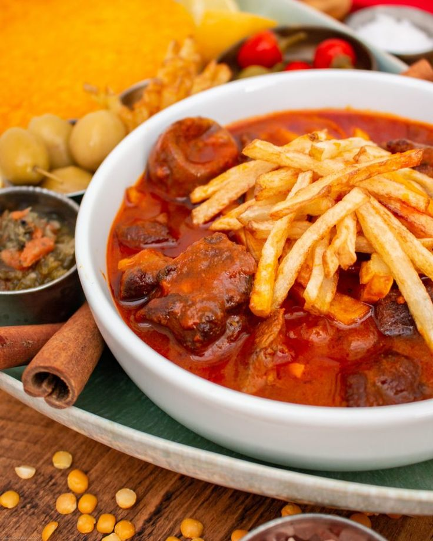

Favorite Cooking Style: Sautéing
Favorite Cooking Shows: Iron Chef, Chopped, and Diners Drive ins and Dives.
Hobbies: Biking, Hiking, Baketball, Skateboarding, Fishing, Camping
1 1/2 tablespoons oil in a saucepan over medium heat; stir in onion. Cook and stir until the onion has softened and turned translucent, about 5 minutes. Add stew meat, split peas, limes, tomato paste, salt, curry powder, turmeric, and pepper. Add just enough water to fully cover the surface of the mixture. Cover and simmer until split peas are tender and meat is cooked through and no longer pink in the center, 2 to 3 hours. Just before the stew is ready, heat 2 inches oil in a deep saucepan over medium heat to 300 degrees F (150 degrees C). Slice potatoes into 2-inch long, thin pieces and lower carefully into the hot oil in batches. Fry until soft, 4 to 5 minutes per batch. Transfer to a plate lined with paper towels to drain. Increase the heat so the oil is 400 degrees F (200 degrees C). Fry potatoes again, until golden and crisp, 4 to 5 minutes per batch. Remove from the oil and drain on fresh paper towels. Pour stew into bowls and place potatoes on the surface.
